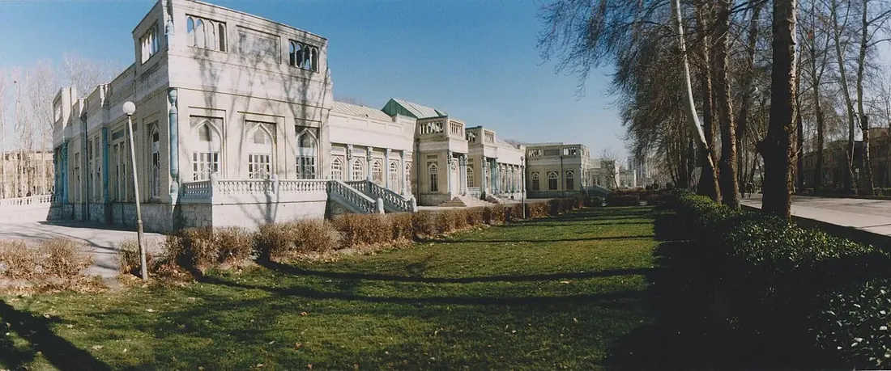

الكلى والمسالك البولية · قبل السفر
مراجعة الكلى والمسالك البولية في مشهد: جهّز الملف قبل السفر

إذا كنت تفكر في السفر إلى مشهد لمراجعة طبيب كلى أو مسالك بولية، فابدأ بالتواصل مع مركز مختص وإرسال التقارير الحديثة. تختلف الحالات بين حصوات الكلى ومشكلات البروستات والالتهابات وأمراض الكلى المزمنة، ولا يمكن تحديد الإجراء المناسب من خلال رسالة أو صورة واحدة.
ما التقارير التي قد يطلبها الطبيب؟
بحسب سبب المراجعة، قد يحتاج الطبيب إلى تحاليل وظائف الكلى والأملاح، وتحليل البول أو المزرعة، وتقارير السونار أو الأشعة المقطعية، وملخص الأدوية والأمراض السابقة. اسأل المركز عن الفحوص المطلوبة تحديداً، ولا تكررها أو توقف علاجاً قائماً دون توجيه طبي.
إذا كانت المشكلة حصوات أو انسداداً
أرسل تقرير التصوير وصوره الأصلية، واسأل الطبيب عن المعلومات التي يحتاج إليها لتقييم حجم الحصوة وموقعها وما إذا كانت هناك حاجة إلى فحص إضافي. لا تفترض أن التفتيت أو المنظار أو العلاج الدوائي مناسب لحالتك قبل مراجعة الطبيب.
إذا كنت تخضع لغسيل الكلى
لا تبدأ السفر قبل الحصول على تأكيد مكتوب من وحدة غسيل مرخصة بشأن توفر جلساتك في التواريخ المطلوبة، والفحوص والوثائق التي تحتاج إليها، وطريقة التنسيق بين وحدتك الحالية والمركز الذي سيستقبلك. لا تعتمد على وعد شفهي بتوفر مكان.
الأعراض التي لا تنتظر السفر
إذا ظهرت حرارة مع ألم شديد في الخاصرة، أو تعذر التبول، أو ألم حاد متزايد، أو تدهور سريع في الحالة، فاطلب تقييماً طبياً عاجلاً في مكانك. لا تؤخر الرعاية الطارئة من أجل استشارة عن بُعد أو حجز رحلة دولية.
تحقق من المركز وترخيص IPD
إذا كنت قادماً من خارج إيران، تحقق من اسم المنشأة في قائمة مراكز المرضى الدوليين التابعة لوزارة الصحة. اسأل عن الطبيب والقسم والخدمات المتاحة، وهل يمكن مراجعة ملفك قبل السفر، وما إذا كانت هناك حاجة إلى فحص حضوري.
الإقامة والنقل والمتابعة
قد يحتاج بعض المرضى إلى إقامة قريبة من المركز أو إلى مرافق يساعدهم في التنقل. اسأل الطبيب عن المدة المتوقعة للمراجعة أو المتابعة، وعن أي قيود على الحركة أو السفر. إذا كنت تستخدم دعامة أو قسطرة مؤقتة، تأكد من معرفة موعد المراجعة أو الإزالة والجهة المسؤولة عنها قبل العودة.
للتجهيز، راجع وثائق السفر الطبي والاستشارة قبل السفر ودليل مستشفيات مشهد. ويمكنني مساعدتك في الاستفسار عن الإقامة والنقل والتواصل غير الطبي بعد تأكيد الموعد الطبي.
أسئلة شائعة
هل تكفي صورة الأشعة لتحديد العلاج؟
قد تساعد في التقييم الأولي، لكن الطبيب قد يحتاج إلى الصور الأصلية والفحص السريري وتحاليل حديثة.
هل يمكن ترتيب جلسات غسيل الكلى بعد الوصول؟
لا تسافر قبل الحصول على تأكيد مكتوب من وحدة غسيل مرخصة بشأن المواعيد والمتطلبات.
هل أوقف الأدوية قبل السفر؟
لا توقف أو تعدل أي دواء دون مراجعة الطبيب الذي يتابع حالتك.
إذا كنت تحتاج إلى تنسيق الإقامة أو النقل، أرسل التفاصيل اللوجستية بعد تأكيد المركز الطبي. تواصل مع حسين عبر واتساب